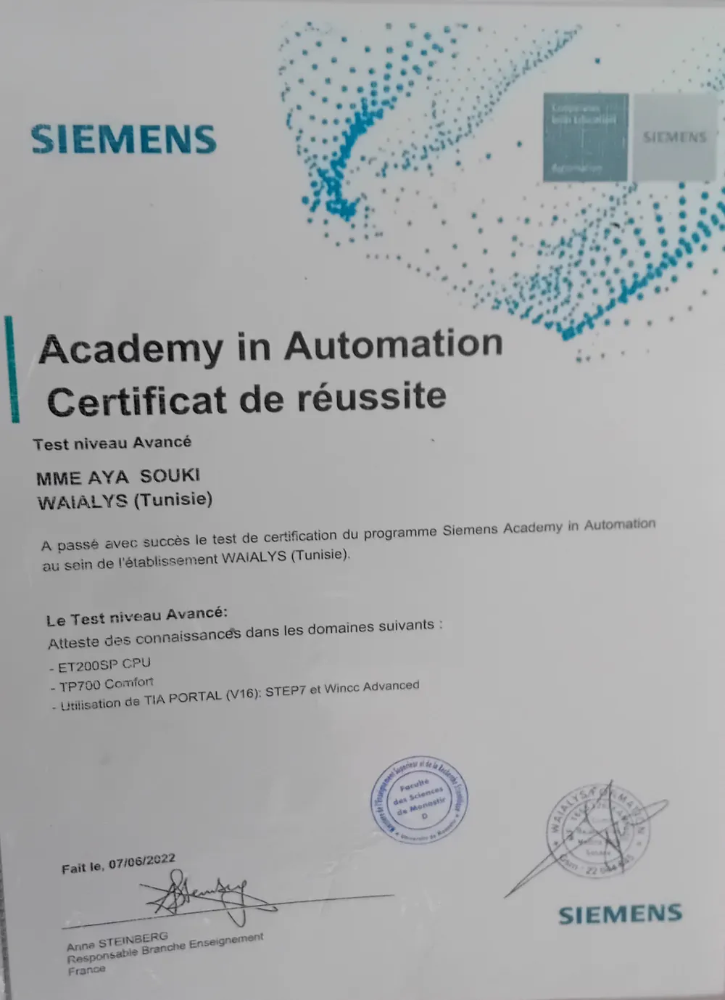
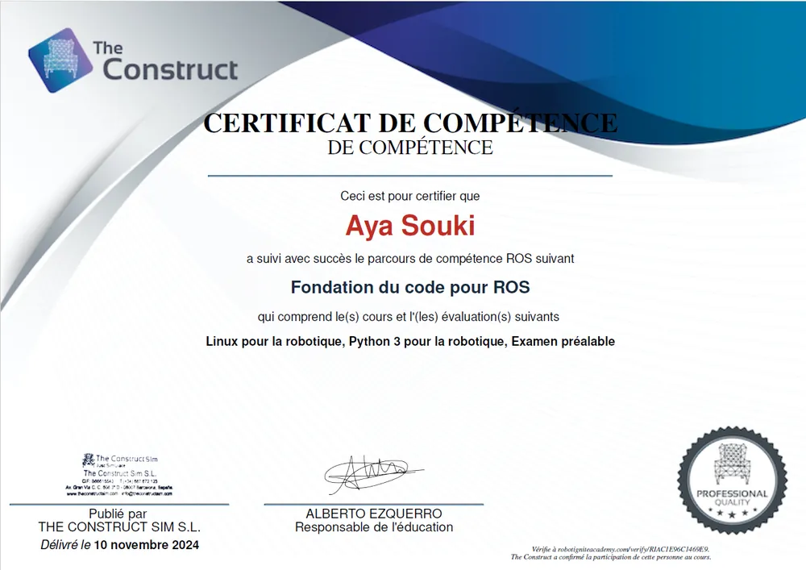
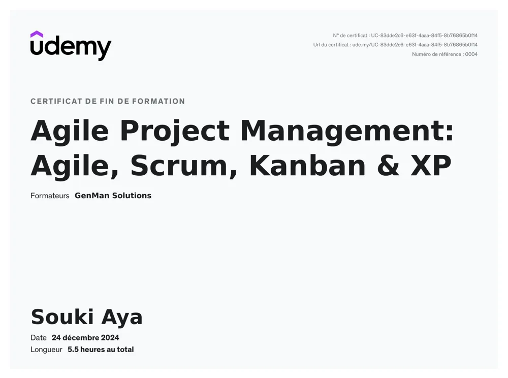
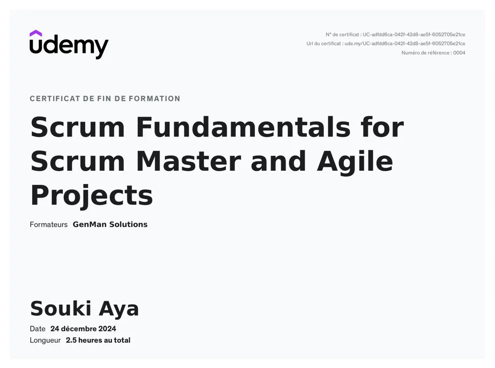

Industrie 4.0
Siemens — Academy in Automation
Siemens
Fondamentaux de l’industrie 4.0 : automatisation, intégration de systèmes et processus industriels intelligents.
Formations complémentaires en industrie 4.0, IA, robotique, systèmes et gestion de projet agile.

Industrie 4.0
Siemens
Fondamentaux de l’industrie 4.0 : automatisation, intégration de systèmes et processus industriels intelligents.

Robotique
The Construct10 novembre 2024
Linux pour la robotique, Python 3 pour la robotique et fondamentaux de ROS.

IA
NVIDIA Deep Learning Institute24 novembre 2024
Fondamentaux du Deep Learning, réseaux convolutifs et entraînement de modèles.

IA industrielle
NVIDIA Deep Learning Institute24 novembre 2024
Cas d’usage industriels de l’IA pour la maintenance prédictive et l’analyse de données.

Gestion de projet
Udemy · GenMan Solutions24 décembre 2024 · 5,5 h
Méthodes agiles, cadre Scrum, Kanban et Extreme Programming.

Gestion de projet
Udemy · GenMan Solutions24 décembre 2024 · 2,5 h
Rôles, événements et artefacts Scrum pour piloter des projets agiles.
Systèmes
Cisco Networking Academy
Fondamentaux de Linux, ligne de commande et sécurité.